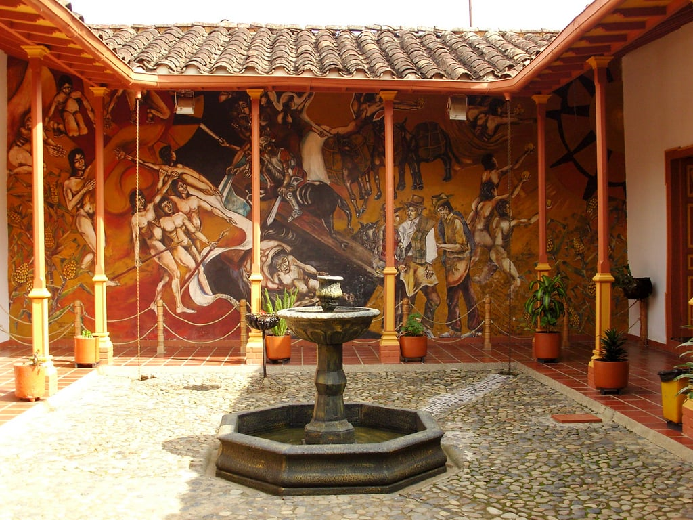
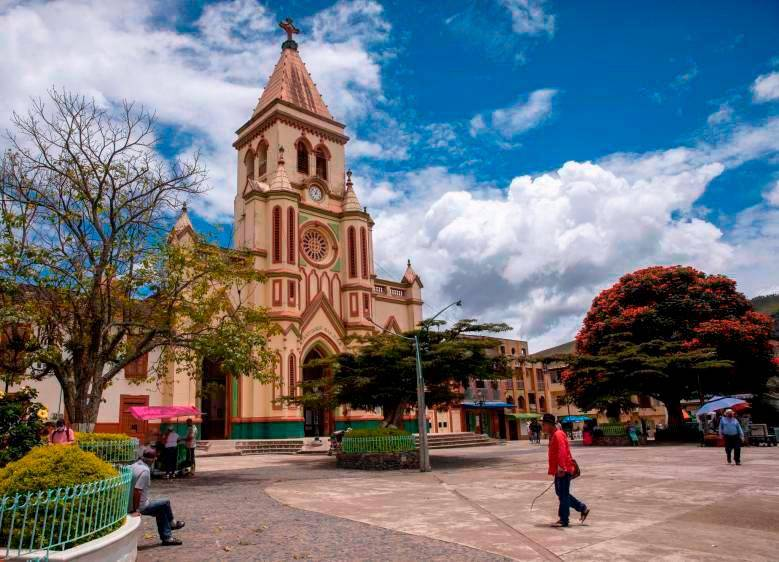
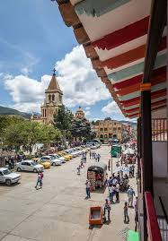

Urrao, ubicado en el departamento de Antioquia es un lugar de incomparable belleza. Sus paisajes cautivan con sus verdes montañas y exuberante vegetación. Los ríos cristalinos serpentean entre los valles, reflejando la pureza del entorno. La calidez de su gente se refleja en su amabilidad y sonrisas, mientras que sus tradiciones y cultura enriquecen cada rincón del pueblo. Urrao es un tesoro oculto que invita a explorar y disfrutar de la magia de la naturaleza y la hospitalidad de su comunidad..
Una Maravilla del Suroeste
El páramo del Sol es un tesoro natural de incalculable valor. Ubicado en las altas montañas de nuestro país, este ecosistema único alberga una gran diversidad de flora y fauna, creando un paisaje mágico y cautivador.
Los páramos desempeñan un papel crucial en el equilibrio ecológico de nuestro planeta. Actúan como esponjas naturales, almacenando agua y liberándola gradualmente a lo largo del tiempo, lo que abastece a numerosos ríos y ecosistemas a lo largo de las laderas de las montañas.
Además, el páramo del Sol juega un papel fundamental en la regulación del clima local y global. Sus extensas áreas de vegetación actúan como sumideros de carbono, ayudando a reducir el impacto del cambio climático y manteniendo un equilibrio climático esencial para la vida en la Tierra.
Sin embargo, los páramos están enfrentando amenazas cada vez mayores. La deforestación, la minería ilegal y la contaminación ponen en peligro la salud de estos ecosistemas frágiles. Es esencial que tomemos conciencia de la importancia de cuidar y preservar los páramos, no solo por su belleza y biodiversidad, sino también por los servicios vitales que brindan a las comunidades locales y al mundo en general.
Cuidar los páramos implica tomar medidas concretas, como promover prácticas agrícolas sostenibles, evitar la deforestación y la contaminación, así como fomentar la educación ambiental y la participación comunitaria en su conservación.
Recordemos que los páramos son tesoros naturales que debemos proteger y respetar. Solo a través de nuestro compromiso y acciones podemos asegurar que las generaciones futuras puedan disfrutar de la belleza y los beneficios de estos ecosistemas vitales. Cuidemos los páramos, cuidemos nuestro hogar.
Río con meandros



Enter your e-mail below and get notified on the latest blog posts.